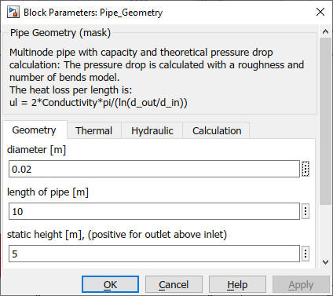
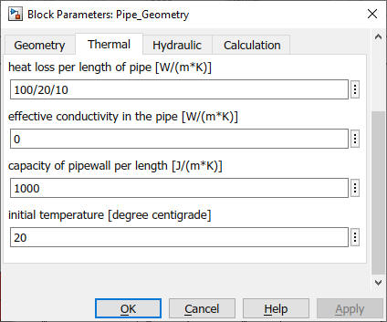
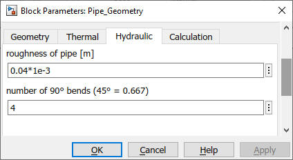
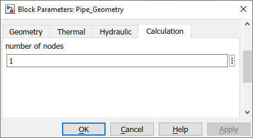

Pipe_Geometry
Path: CARNOT/Hydraulics
Purpose:
Multinode pipe with capacity and theoretical pressure drop calculation.
Description:
For the thermal model and calculations see block
Pipe_basic.
The pressure drop is calculated with a roughness and number of bends model
according to [VDI Wärmeatlas, 2019] :
The heat loss coefficient per pipe length is :
ul = 2*lambda*pi/ln(d_out/d_in)
with
d_in : inner diameter of the pipe in m
d_out : outer diameter of the pipe with insulation in m
lambda : thermal conductivity of the pipe wall
(or insulation material) in W/m/K
ln : natural logarithm
Simular pipe models also based on Pipe_basic but with different approaches for the pressure drop (Pipe) and the thermal losses (Pipe_Isolation) are available.
Input:
| Tamb | : | ambient temperature in °C for thermal losses |
| THBin | : | Thermo-Hydraulic Bus at the inlet of the pipe |
Output:
| THB | : | Thermo-Hydraulic Bus at the outlet of the pipe |
Parameters and Dialog Box:




Some remarks regarding the parameters:
Examples:
Open the example explorer from the Matlab command window
ExampleBrowser
or load the examples via the CARNOT library.
Literature:
VDI Wärmeatlas: VDI-Gesellschaft Verfahrenstechnik und Chemieingenieurwesen,
Springer Vieweg; 12. Aufl., 2019
Characteristics:
| Direct Feedthrough | : | Yes |
| Sample Time | : | Inherited from driving block |
| Vectorized | : | No |